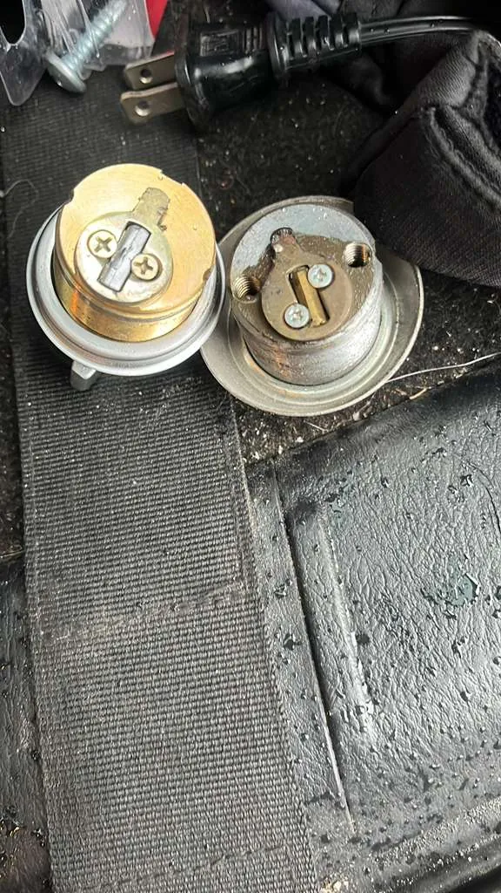

Locks supporting business entrances
Locksmith services in Washington, DC and Arlington, VA
Explain the lock problem and check the condition of the whole entrance.
- Locksmith services
- Door hardware repair
- Glass and board-up
Lockout, damaged cylinder or rekey?
A lost key, damaged cylinder or latch that misses its strike needs a clear description before a suitable service can be discussed. Capital Glass and Door Services offers locksmith services alongside commercial doors, glass repair and board-up.
For a business in Washington, DC or Arlington, VA, call with the exact address and whether the property is accessible. Current service availability must be confirmed. If someone faces an immediate threat, contact emergency services.
Look beyond the lock when the entrance was forced
After an attempted entry, the cylinder may be only part of the damage. Tell us if the strike, frame, door closer or glass was affected. Do not force a damaged door or try an unfamiliar locking workaround on exit hardware.
Keep an authorized site contact available. For rekey discussions, describe the number of affected doors and the desired key arrangement; do not send photos of keys or sensitive access credentials over WhatsApp. The scope depends on the existing hardware and what can be retained.
What helps establish scope and cost
Send a photo of the lock and the full door from a safe, authorized position. Include your address and ZIP code, business or home type, urgency and a short description of the failure. If the issue is intermittent, explain when it happens.
Hardware compatibility, lock condition, the number of doors and any frame repairs affect cost. Rekeying changes a compatible lock to work with a different key; replacing damaged hardware is a different task. Ask which is appropriate before agreeing to work.
Photos from our previous door and hardware work

Call or WhatsApp: which should you use?
Call vs WhatsApp
Active hazard or broken glass right now? Call. Not urgent or want a quote? Send a photo on WhatsApp.
Keep people away from damaged glass. Take photos only from a safe position.
What to send on WhatsApp
- A photo of the damage
- Your address and ZIP code
- Business or home
- How urgent it is
Questions before you call
How can I request help with a lockout?
Call with your location, property type and lock problem to check current availability. Mention whether the door is stuck, damaged or unable to lock.
Can a lock be rekeyed instead of replaced?
Possibly. It depends on the lock type, condition and intended key arrangement. Damaged or incompatible hardware may require another approach.
What if the latch problem is caused by the door?
Mention dragging, slamming or misalignment. Door hardware and locksmith work can be discussed together so the proposed scope addresses the opening.
Related reading and service pages
Tell us what happened to your storefront
Call Capital Glass and Door Services at +1 703-244-0559, or send damage photos and your location on WhatsApp. Ask about availability, the repair scope and what happens next.